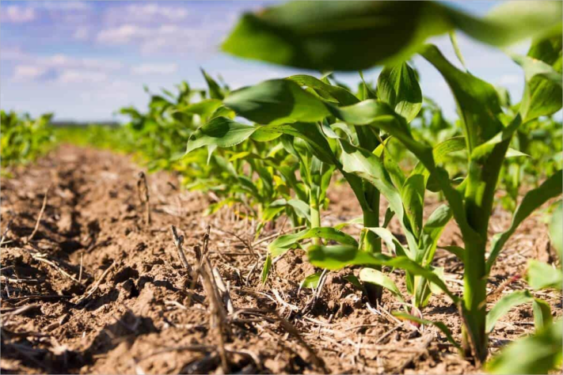

Quem somos?
Somos a Granja Abobrinha,
produzimos produtos alimentícios totalmente livres de agrotóxicos,
com técnicas agrícolas milenares. Nossa mão de obra é totalmente artesanal.
Nossos Produtos
Temos diversos tipos de plantio, porém nosso principal é o milho,
além disso temos seus derivados, sendo eles, amido de milho, quirera, farinha, pipoca e cereal.
Alguns de nossos outros produtos são o feijão, abobrinhas e ovos de galinha.

Planos Para o Futuro;
Somos uma granja pequena, que ainda esta em busca de investimentos,
por conta de dificuldade de manter nosso produtos artesanais, porém com investimentos e novos equipamentos
podemos melhorar e automatizar processos de produção, mas ainda mantendo a essência artesanal e de gerações milenares.
Nossos Contatos e Localização
Estamos recrutando pessoas para as seguintes tarefas:
° Colhetor de abobrinha
° Limpador de louças
° Marceneiro (Que trabalhe de carteira assinada)
° Zelador (Periodo Noturno)
° Entregador (Com caminhão/caminhonete prpria )